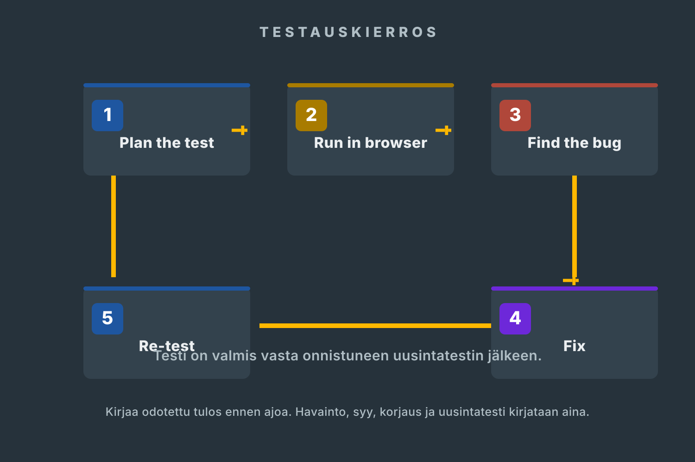
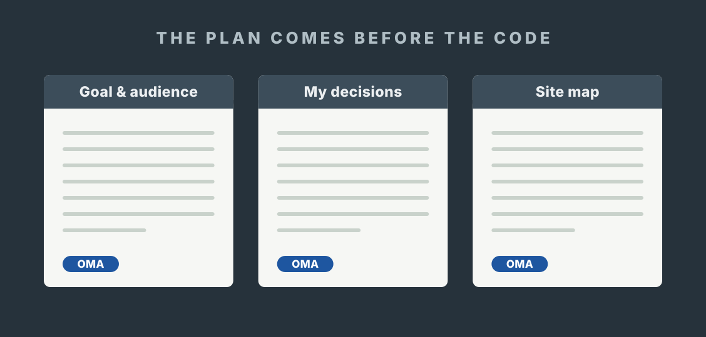
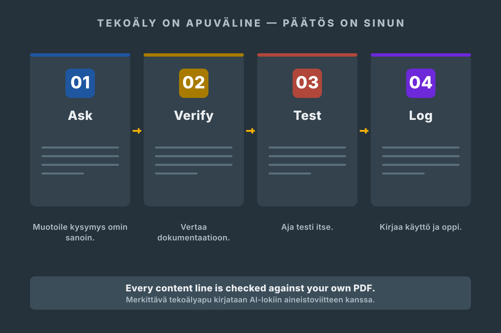

Parlar Ioniano: what you build and how you proceed
You build Parlar Ioniano, a public website that presents Ionian (Lingua Ioniana), the language you created, with hand-written HTML, CSS and JavaScript and the Bootstrap component library: every grammar table is loaded from a JSON file that you have checked against your own 58-page reference PDF. A curious learner opens the public URL on a phone or a laptop, finds how a letter is pronounced, reads the pronoun and article tables, converts numbers and learns the café dialogue, and another person can get the project running from your README alone.
You decide how each page is built, you write every expected test result before the run, and you are the only one who can check the language content against the PDF. The licence of the code, the institution's device-security policy line, your public author name and the external testers are agreed with the supervisor, not decided by you or by AI.
How to use the weekly guide
Open only the current week. Read how the week connects to the whole project, and the week goal.
Do the week's work steps in order. The first unfinished work step is open. Tick a part as soon as you have done it: a tick is your own memory, not a submission.
When a work step changes the site, do each change as a GitHub issue and work through it with the six steps on the Working method page. One work step can need several issues.
Do the end-of-week check. Write the three project journal fields (what and how, why, where the work sample is), download the whole journal and commit it as project-docs/project-journal.md, replacing the old file.
Work step is one numbered item in this site's weekly guide. GitHub issue is a numbered card in your repository for one change to the site, with a done-when condition and a size estimate. It is usually half a day to a day of work, and the commit that finishes it closes it. Working method is the six steps on the Working method page (pick, plan, build, test, save, log) that you repeat for every issue.
Start from week 36 →Site parts and toolsIllustration of how the site's parts fit together. It is not a screenshot of the finished site.
Your reference PDF (58 pages)
The only source of truth for the language content. You type every form from it and check the site against it: no AI and no other person knows Ionian, so an invented form is a bug.
Your project folder and its repository
The project folder on your own machine, whose whole history Git stores, and its public copy on GitHub. The page files are in the root, your own code in css/ and js/, the language data in data/, the unit tests in tests/ and your documents in project-docs/. There is no build step: the files you write are exactly the files that go live.
Language data data/*.json
JSON is a plain-text format for structured data (JavaScript Object Notation). Every grammar table, word and phrase is stored here and loaded with fetch(), the browser call that loads a file while the page is open. tools/check-data.html checks every file.
Your JavaScript js/
One shared loader in js/data.js, one reusable table function, the converter as pure functions in js/numbers.js and one script per page. Elements are built with textContent, never with innerHTML and data. Most function names in the implementation help are suggestions.
Bootstrap from a CDN
Bootstrap is the component library for the navbar, the grid, the tables, the tabs, the cards and the accordion. It is loaded from a content delivery network (CDN), a public server that hosts its files, with a pinned version and an integrity hash, and themed in css/style.css. Bootstrap Icons and the font come the same way. The number converter is built by hand without Bootstrap components.
Local web server (Live Server)
fetch() works only over http://, a page served by a server, never over file://, a file opened straight from disk. So you always open the site through Live Server at http://localhost.
Tests
A unit test is a small automated check that runs one of your functions and compares the result with the value you wrote down beforehand. The converter's unit tests run in the browser from tests/tests.html, and every test case, automated or by hand, is a numbered row in project-docs/test-matrix.md.
Git, GitHub and GitHub Pages
GitHub issues, small commits, the tags v0.5 and v1.0, and a short feature branch for the week-45 feedback change. GitHub Pages publishes the main branch at your public URL over HTTPS.
AI
May help with HTML, CSS and JavaScript, error messages and test ideas, and every significant use goes into the AI log. It never writes Ionian content. The site structure, the accessibility solutions and the converter logic are your own work.
Where do I write what?
The brief (on this site)
The client's need, the requirements, the must-have pages and what stays out. Check here what must be built.
Technical plan project-docs/technical-plan.md
Your decisions and the supervisor's, with reasons: the goal, the audience, the Bootstrap components, the scope guard, the data store justification and the open items. Fill it in on the Plan page, download it and commit it. Update it when the supervisor answers an open item.
GitHub issue
One change to the site: what to do, the done-when condition and the size estimate. The commit that finishes it closes it. The client's decisions on the review findings are recorded on the issues they concern.
Language data data/
All language content, typed from your PDF and never typed into the HTML.
Test matrix project-docs/test-matrix.md
The one numbered list of test cases (T01, T02 and so on): the expected result written before the run, the observed result and the date. It starts in week 44 with the first regression test and reaches at least 12 cases in week 46.
Debugging chains project-docs/debugging-chains.md
Three chains, each from the observation to the regression test, with the sources you used.
Memos in project-docs/
For example the kickoff notes, the library comparison, the review agreement and the review log, the user test, the deployment path, the HTML validation and the security review, with screenshots in project-docs/evidence/week-NN/. Write a memo when a work step asks for one.
Project journal project-docs/project-journal.md
Once a week: what you did and how, why, and exactly where the work sample is. You write it on this site, download it and commit it. The repository is public, so no personal data goes into the journal.
AI log project-docs/AI-log.md
Significant AI use: what you asked, what you used, changed or rejected, and how you checked it.
Evidence matrix project-docs/evidence-matrix.md
One row for each of the 44 requirements: the requirement code, the work-sample link (a commit, issue, file, tag or screenshot) and the week. The same work sample may appear on several rows. You start the file in week 48 at the latest and finish it in week 49. The ticks in the Evidence matrix view are your own checklist.
README, LICENSE and CREDITS
The README is for the person who runs the project: what it is, how to serve it locally and where the content comes from. LICENSE holds the licence agreed with the supervisor, and CREDITS lists the fonts, Bootstrap, the icons and the Ionian material's terms of use.
Record a result where it belongs right away: a test result in test-matrix.md, a finished change in its issue and commit. The journal summarises the week and points to these places. In the repository, people appear only by role, for example supervisor or tester A. The tester's own words stay in the review and user-test logs, marked with the role only; if the supervisor needs a name, send it in Teams. The ticks and fields on this site are stored only in this browser: the evidence always lives in the repository.
Requirement, suggestion or your decision?
Requirement comes from the brief and must be built: every form checked against your PDF, the credit and the terms of use visible, "coming later" where the PDF is unfinished, a half-way version tried at the end of October, a number converter, a phrasebook where a beginner learns the café dialogue, and a README that lets another person run the project. The pages are sorted into three priority levels. P0 is the must-have core: Home, Alphabet & Pronunciation, Pronouns, Nouns, Articles & Gender, Numbers with the converter, and the Phrasebook. P1 is important follow-up work, here the Verbs overview, started only if P0 is complete by the end of week 46. P2 is an optional extra that may be dropped, here word-building.
Agreed implementation is fixed for the whole project: hand-written HTML, CSS and JavaScript with no build step, Bootstrap from a CDN as the component library, the number converter built without Bootstrap components, unit tests in tests/tests.html, and publishing on GitHub Pages from the main branch. The data store, JSON files in data/ loaded with fetch() through one shared loader in js/data.js, is the agreed implementation, because every later page is built on it. In week 37 you justify the agreed choice against at least one alternative. If the comparison clearly favours another option, the deviation is agreed with the supervisor before the next implementation week. In the same way, the week-38 memo justifies Bootstrap against two alternatives with your own measurements.
Suggestion is a starting point from this site, such as most function names and the code templates in the implementation help. You may do it another way if you record why. Your decision is justified in the plan or in the journal, for example your goal and audience, which Bootstrap components you build on and where you write your own CSS, your record shapes, how the converter handles junk input and what you refuse to build. Agreed with the supervisor are the licence of the code, the institution's device-security policy line, your public author name and who acts as the external tester in weeks 44 and 48. An empty field in the plan is the right answer until the item has been agreed.
This one project is the demonstration for four qualification units: Tieto- ja viestintätekniikan perustehtävät (25 competence points), Ohjelmointi (45), Ohjelmistokehittäjänä toimiminen (45) and Ohjelmiston toteuttaminen ohjelmistokomponenttikirjastolla (30), 44 assessed requirements in total. The codes t1–t12, p1–p11, s1–s14 and k1–k7 refer to these four units in this order, and all 44 rows are in the Evidence matrix view.
You learn and show how to set up a real toolchain, the tools a project is written, tested and published with, and publish through it; how to write structured, maintainable and tested JavaScript; how to plan work as GitHub issues, estimate it and review it with a client; and how to choose a component library on measured evidence and build an accessible site on it. Nothing is assessed separately: every requirement is proved by the work you do in these weeks and by the work sample it leaves behind, for example a commit (one named, saved change in the repository's history), a memo or a test row. The language itself is your own source material: the demonstration assesses your web development skills.
The qualification units also include competencies that are demonstrated in a team. That is why the work steps talk about a client, reviews and agreements even though you build this project alone. The supervising teacher acts as the client's representative and as the supervisor, and the agreements, reviews and shared decisions are held with them or with another person the supervisor agrees. Those conversations are assessed competence in their own right, not a formality.
Remember: the ticks and text fields on this site are your own working memory. They are stored only in this browser and never reach the teacher. A tick is not a submission and not part of the evidence. Tick only when the work is tested and the work sample is in the Git repository.
What are the paper work pack and the original template for?
The paper work pack is a schedule and a checklist for the moments when this page is not open. You never rewrite your answers into it.
The teacher's source documents feed this build path. Their topics are already inside the weekly work steps and the project journal. Fill in a separate template only if the teacher gives you a separate instruction.
Your own state in this browser
Ticks, project journal, plan and AI log are stored only in this browser.
Teacher's source material · no separate filling without instructions
These are the teacher's source documents. You do not fill them in without a separate instruction. The weekly work steps and the project journal cover the same content.
I have spent years building a language. Ionian — Lingua Ioniana — is a Romance language with its own alphabet, three genders, its own numbers and its own café small talk. Right now it lives in a 58-page reference PDF that only I can navigate. I want a website where a curious learner can actually find things: how a letter is pronounced, how the pronouns change when you talk to a friend or a stranger, which article goes with which gender, and how to count to ten thousand.
Accuracy matters more than volume. No AI and no other person knows this language, so every table on the site must be checked against my PDF — an invented form is a bug. My terms of use stay visible: the material is mine, it is shared to spread awareness of Ionian, and the site credits me as the author. Where my PDF is still under construction, the site says “coming later” instead of making content up.
At the end of October I want to try a half-way version at a real web address on my own phone, and I will bring along a tester who has never seen Ionian. I want to hear, in their words, whether they can find the alphabet, read a pronoun table and understand what this language is — without me explaining anything.
By the fourth of December I want version 1.0 at a public URL: a site with a number converter I can show off, a phrasebook where a beginner can learn my café dialogue, and a README good enough that another person can get the project running without asking me anything.
How to read the cards below
Requirement: the client's wish in this brief. It must be built.
Agreed implementation: the tools and the way of building that are fixed for the whole project.
Suggestion: a starting point from this site, for example the function names in the implementation help. You may replace it if you record why.
Your decision: you choose it and write the reason into the plan or the journal.
Agree with the supervisor: you do not decide it yourself or with AI.
Agreed implementation
Hand-written HTML, CSS and JavaScript — no build step and no bundler. A bundler is a tool that packs many source files into one file for the browser; this project has none, so the files you write are exactly the files that go live. Bootstrap is the component library, loaded from a content delivery network (CDN) — a public server that hosts Bootstrap's files so you link to them instead of copying them into your repository — and compared and configured in week 38: the navbar, tables, tabs, cards and accordion build on it, and the number converter page is built from scratch without it. All content lives as JSON in data/ and is fetched at runtime through one shared loader in js/data.js. This data store is the agreed implementation, because every later page is built on it: in week 37 you justify the agreed choice against at least one alternative, and if the comparison clearly favours another option, the deviation is agreed with the supervisor before the next implementation week. Your decision: which Bootstrap components you build on and where you write your own CSS (week 38). Unit tests run in the browser from tests/tests.html. Published on GitHub Pages from the main branch — a branch is a named line of commits, and main is the one Pages serves. “The public URL” on this site always means that Pages address: the web address (URL) anyone can open, not a file on your own laptop.
Priorities. P0 is the must-have core that has to be finished; P1 is important follow-up work, started only once P0 works; P2 is an optional extra that may be dropped without failing the project.
Named temptations that are not in this project: an interactive verb conjugator, audio recordings, user accounts, and content for the PDF's under-construction pages 57–58 — the site says “coming later”. The Verbs overview (P1) may start only if P0 is complete by the end of week 46.
Agree with the supervisor
These are not yours to decide — not alone and not with AI. Empty means “open item”, and that is the correct state until agreed:
The license of the code (the language material keeps its own terms).
The institution's line on the device-security evidence — the requirement named “Laitteiden suojaus” in the evidence matrix at the end of this page. Short codes like t12 are how these instructions refer to a single matrix row.
Your public author name on the site and the repository.
Who acts as the external tester in weeks 44 and 48.
Already agreed for all projects: in the repository, people appear only by role, for example supervisor or tester A. A tester's own words stay in the review notes with the role only, and names go to the supervisor in Teams if they are needed. The supervisor acts as the client's representative: they receive your kickoff questions and represent the client in the reviews.
Source material and tools
Requirement: the 58-page reference PDF is the single source of truth for all language content: every table is typed from it and verified against it. No images from elsewhere. Agreed implementation: fonts come from Google Fonts and icons from Bootstrap Icons, both loaded from a CDN with a pinned version and both listed in CREDITS. Your decision: the flag and column motif may be redrawn as your own simple SVG (Scalable Vector Graphics — an image written as text and drawn from shapes, so it stays sharp at any size). Requirement: AI may help with HTML, CSS and JavaScript (logged in the AI log) — never with Ionian content.
Keep the red thread visible
Requirement → issue → implementation → test → work sample
Requirement
Explores the possibilities and limits of the component library (k2)
Issue
#7 Compare component libraries for the grammar tables
Done when
Memo lists possibilities, limits and own measurements for 3 options
Test and work sample
Comparison memo in project-docs/, decision in the plan, Bootstrap configured in css/style.css in a commit
Working method · one GitHub issue at a time
Six steps, every time
This is the working method for one change to the site. The weekly guide tells you which work steps to do this week. Inside a work step that changes the site, repeat these six steps for every GitHub issue, then go back to the work step and tick its parts.
1Pickone GitHub issue from the top of the backlog
2Planwhich file and which data
3Buildpiece by piece
4Testagainst your own PDF
5Savecommit and push
6Logresult in the issue, takeaway in the journal
Rule of thumb: if you cannot explain the change, the work is not done yet.
Open only the current week. Read how the week connects to the whole project and the week goal, do the work steps in order, then do the end-of-week check and fill in the week's project journal.
Agreements with the supervisor go where they belong: a decision and its reason into the plan, a change to the site onto its GitHub issue. In the repository, people appear only by role, for example supervisor or tester A.

A test is done only after a passing re-test.
Test like a developer
Testing is not just clicking around. Record the expected result, the observed result, the cause of the bug, the fix and the re-test.
At least 12 planned test cases with the expected result written before the run — thirds: normal use, limits, error cases. The test cases are numbered T01, T02, T03 and so on in project-docs/test-matrix.md, and that number is how a test is referred to everywhere else on this site, also in the names of your unit tests.
The broken-network case: block a data JSON in DevTools and expect your own error state, not a blank page.
The converter's junk inputs: empty, letters, negative, too large — decide the behaviour and write it down.
The search's cross-site scripting (XSS) string — text that would run as code if the page inserted it as HTML — renders as harmless text because you used textContent; prove it on the public URL.
The released version is tested in a clean environment, never only in your own working folder.
Glossary · for looking things up
Terms used in this project
Every term is also explained where it first comes up. Come back here whenever an identifier or an abbreviation slips your mind. The glossary lists only the terms this project actually uses.
Published work
Gallery
The finished v1.0 release is lifted here in week 48: name, screenshot, license and the release link.
The release is published in week 48.
Phase 1 · Foundations · Week 36 · 31 Aug – 4 Sep
Kickoff, toolchain and the first deploy
After this week
From the brief – the client's wish this week fulfills
Finished this week
Why this matters
This week's tech
Weekly tasks
0 / 4
How to proceed
guided work · do in order
1Step. Filled from data.
I need implementation helpopen only if you get stuck – try it yourself first
Weekly day rhythm
Done when
Before you continue: check the week's done-when condition.
Show
Kickoff notes with the question list, the repository with its README, the first deploy live at the public URL, the plan draft, the P0 backlog — and the phone screenshot in project-docs/evidence/week-36/.
Weekly project journal
This is the journal's only place to write: three questions at the end of the week. The fields are stored only in this browser — the download and the state of recorded weeks are in the Project journal view.
Not recorded yet
Phase 1 · Foundations · Week 37 · 7–11 Sep
Content becomes data: the Alphabet view
After this week
From the brief – the client's wish this week fulfills
Finished this week
Why this matters
This week's tech
Weekly tasks
0 / 3
How to proceed
guided work · do in order
1Step. Filled from data.
I need implementation helpopen only if you get stuck – try it yourself first
Weekly day rhythm
Done when
Before you continue: check the week's done-when condition.
Show
data/letters.json and data/words.json, js/data.js, the Alphabet page live at the public URL, and the tools/check-data.html report pass/fail in the journal.
Weekly project journal
This is the journal's only place to write: three questions at the end of the week. The fields are stored only in this browser — the download and the state of recorded weeks are in the Project journal view.
Not recorded yet
Phase 1 · Foundations · Week 38 · 14–18 Sep
Bootstrap shell and the component decision
After this week
From the brief – the client's wish this week fulfills
Finished this week
Why this matters
This week's tech
Weekly tasks
0 / 3
How to proceed
guided work · do in order
1Step. Filled from data.
I need implementation helpopen only if you get stuck – try it yourself first
Weekly day rhythm
Done when
Before you continue: check the week's done-when condition.
Show
The comparison memo with your own measured numbers is in project-docs/, the navbar works from every page on the public URL and collapses correctly on a phone, and the Home page shows the credit and terms.
Weekly project journal
This is the journal's only place to write: three questions at the end of the week. The fields are stored only in this browser — the download and the state of recorded weeks are in the Project journal view.
Not recorded yet
Phase 2 · Grammar views · Week 39 · 21–25 Sep
Pronouns: one function, eight tables
After this week
From the brief – the client's wish this week fulfills
Finished this week
Why this matters
This week's tech
Weekly tasks
0 / 3
How to proceed
guided work · do in order
1Step. Filled from data.
I need implementation helpopen only if you get stuck – try it yourself first
Weekly day rhythm
Done when
Before you continue: check the week's done-when condition.
Show
All eight pronoun tables render on the public URL from data/grammar.json, the tabs can be operated with the keyboard alone, wide tables scroll horizontally on a phone, and renaming the JSON shows your error state.
Weekly project journal
This is the journal's only place to write: three questions at the end of the week. The fields are stored only in this browser — the download and the state of recorded weeks are in the Project journal view.
From the brief – the client's wish this week fulfills
Finished this week
Why this matters
This week's tech
Weekly tasks
0 / 4
How to proceed
guided work · do in order
1Step. Filled from data.
I need implementation helpopen only if you get stuck – try it yourself first
Weekly day rhythm
Done when
Before you continue: check the week's done-when condition.
Show
The four grammar pages render correctly on the public URL, the accordion opens and closes with the keyboard alone, v0.5 is tagged, and the review agreement (roles + date) is committed in project-docs/.
Weekly project journal
This is the journal's only place to write: three questions at the end of the week. The fields are stored only in this browser — the download and the state of recorded weeks are in the Project journal view.
Not recorded yet
Phase 2 · Grammar views · Week 41 · 5–9 Oct
No project work
This week is reserved for other studies. No project work and no catch-up work. Continue in week 44 from the latest working version on main, the branch GitHub Pages publishes.
Phase 2 · Grammar views · Week 42 · 12–16 Oct
Autumn break
No project work and no catch-up tasks. Rest. The site and the v0.5 tag will wait exactly where you left them.
Phase 2 · Grammar views · Week 43 · 19–23 Oct
No project work
Reserved for other studies. The review happens in week 44 — the agreement is already in the repository.
Phase 2 · Grammar views · Week 44 · 26–30 Oct
Client review and re-plan
After this week
From the brief – the client's wish this week fulfills
Finished this week
Why this matters
This week's tech
Weekly tasks
0 / 4
How to proceed
guided work · do in order
1Step. Filled from data.
I need implementation helpopen only if you get stuck – try it yourself first
Weekly day rhythm
Done when
Before you continue: check the week's done-when condition.
Show
project-docs/review-2026-w44.md with the two voices separated, the updated backlog, the fix commits, and chain 1 in debugging-chains.md.
Weekly project journal
This is the journal's only place to write: three questions at the end of the week. The fields are stored only in this browser — the download and the state of recorded weeks are in the Project journal view.
Not recorded yet
Phase 3 · Complete site · Week 45 · 2–6 Nov
The number converter — built from scratch
After this week
From the brief – the client's wish this week fulfills
Finished this week
Why this matters
This week's tech
Weekly tasks
0 / 3
How to proceed
guided work · do in order
1Step. Filled from data.
I need implementation helpopen only if you get stuck – try it yourself first
Weekly day rhythm
Done when
Before you continue: check the week's done-when condition.
Show
tests/numbers.test.js with PDF-cited expectations, js/numbers.js, the Numbers page live, and the feedback-change commit linked to its finding.
Weekly project journal
This is the journal's only place to write: three questions at the end of the week. The fields are stored only in this browser — the download and the state of recorded weeks are in the Project journal view.
Not recorded yet
Phase 3 · Complete site · Week 46 · 9–13 Nov
Phrasebook, word cards and search
After this week
From the brief – the client's wish this week fulfills
Finished this week
Why this matters
This week's tech
Weekly tasks
0 / 4
How to proceed
guided work · do in order
1Step. Filled from data.
I need implementation helpopen only if you get stuck – try it yourself first
Weekly day rhythm
Done when
Before you continue: check the week's done-when condition.
Show
The Phrasebook live with the card grid and search, the XSS screenshot, the full test matrix with expected results filled in, and the LICENSE/CREDITS commits.
Weekly project journal
This is the journal's only place to write: three questions at the end of the week. The fields are stored only in this browser — the download and the state of recorded weeks are in the Project journal view.
Not recorded yet
Phase 3 · Complete site · Week 47 · 16–20 Nov
Quality and testing week
After this week
From the brief – the client's wish this week fulfills
Finished this week
Why this matters
This week's tech
Weekly tasks
0 / 4
How to proceed
guided work · do in order
1Step. Filled from data.
I need implementation helpopen only if you get stuck – try it yourself first
Weekly day rhythm
Done when
Before you continue: check the week's done-when condition.
Show
The executed test matrix, debugging-chains.md with three complete chains, the Lighthouse pairs in project-docs/lighthouse/, html-validation.md and security-review.md, and the refactor commit series.
Weekly project journal
This is the journal's only place to write: three questions at the end of the week. The fields are stored only in this browser — the download and the state of recorded weeks are in the Project journal view.
Not recorded yet
Phase 4 · Release · Week 48 · 23–27 Nov
Release candidate, user test and v1.0
After this week
From the brief – the client's wish this week fulfills
Finished this week
Why this matters
This week's tech
Weekly tasks
0 / 4
How to proceed
guided work · do in order
1Step. Filled from data.
I need implementation helpopen only if you get stuck – try it yourself first
Weekly day rhythm
Done when
Before you continue: check the week's done-when condition.
Show
The clean-clone notes, user-test-2026-w48.md, deployment-path.md, the instruction-fix commits, the v1.0 release and the started project-docs/evidence-matrix.md.
Weekly project journal
This is the journal's only place to write: three questions at the end of the week. The fields are stored only in this browser — the download and the state of recorded weeks are in the Project journal view.
Not recorded yet
Phase 4 · Release · Week 49 · 30 Nov – 4 Dec
Demonstration week
After this week
From the brief – the client's wish this week fulfills
Finished this week
Why this matters
This week's tech
Weekly tasks
0 / 3
How to proceed
guided work · do in order
1Step. Filled from data.
I need implementation helpopen only if you get stuck – try it yourself first
Weekly day rhythm
Done when
Before you continue: check the week's done-when condition.
Show
project-docs/evidence-matrix.md fully linked, project-docs with the final journal, AI log and self-assessment, and the handover confirmation.
Weekly project journal
This is the journal's only place to write: three questions at the end of the week. The fields are stored only in this browser — the download and the state of recorded weeks are in the Project journal view.
Not recorded yet
Before the code · draft in week 36, finished by week 37, revisited in week 38 and week 44
One plan, your decisions
The pre-filled sections come from the brief. You write the decisions that are yours: goal, audience, which Bootstrap components you build on, scope. The supervisor owns the open items — do not decide those yourself or with AI.

The plan comes before the code. Goal, audience and site map first — then the first component.
Pre-filled · included in the downloaded file
1 · Concept
A public reference site for Ionian (Lingua Ioniana), a constructed Romance language. Hand-written HTML, CSS and JavaScript with no build step; Bootstrap from a CDN as the component library; all grammar content as JSON under data/, fetched at runtime — the source of truth is the author's reference PDF. Published on GitHub Pages. The whole project is in English.
2 · Site map and scope
P0: Home · Alphabet & Pronunciation · Pronouns · Nouns, Articles & Gender · Numbers & Comparison with the converter · Phrasebook & Chapter 1. P1 (only if P0 is done by the end of week 46): Verbs overview. P2: Word-building. Out: conjugator, accounts, audio, PDF pages 57–58.
7 · Data (agreed implementation)
Content JSON is loaded at runtime with fetch() from data/ through one shared loader in js/data.js — so the site is always opened over http://, never file://. This data store is the agreed implementation, because every later page is built on it. In week 37 you justify the agreed choice against at least one alternative. If the comparison clearly favours another option, the deviation is agreed with the supervisor before the next implementation week. Loading and error states are implemented in week 37 and proven in week 39. Every content file is checked against the reference PDF — an invented form is a bug. A broken-network response is a test case.
8 · Quality bar
At least 12 planned test cases with the expected result written before the run and executed from tests/tests.html in the browser, 3 complete debugging chains, an accessibility pass with Lighthouse before/after pairs, an HTML validation pass, a client review in week 44 and an external user test in week 48.
9 · Roles
The student is the developer AND the client in the language creator's role. The supervisor acts as the client's representative: they receive the kickoff questions and represent the client in the reviews. The external tester is a different person who has never seen Ionian. In the repository, people appear only by role (supervisor, tester A); names go to the supervisor in Teams if they are needed.
10 · Open items — the supervisor owns these
License of the code · the institution's device-security policy line (t12). An empty field is the correct result until these are agreed.
Open items are not filled in by the student or by AI. They are agreed with the supervisor and updated into the plan afterwards.
One place to write · pushed to Git every week
Project journal
The week's entry is written in the week view, under the tasks. This view is an archive: see which weeks are recorded and download the whole journal as a file.
0 / 11 weeks recorded
File: project-docs/project-journal.md
AI is an allowed tool · understand, verify, test, log
You make the decisions. AI is a tool.
AI may help you with HTML, CSS and JavaScript, error messages and test ideas — logged, verified and tested. It cannot help you with the content: no model knows Ionian. Every grammar table, every phrase and every expected test result comes from your own PDF and is checked against it. The site structure, the accessibility solutions and the number converter logic are your own work — that is what the demonstration assesses.

Ask → verify → test → log and learn.
01
Understand
Explain in your own words what the solution does and why it fits your own data model and components.
02
Verify
Compare with MDN (the Mozilla web documentation), the official Bootstrap documentation and your own PDF. AI invents attributes, class names and methods — and it will invent Ionian.
03
Test
Run the tests yourself. Never invent test results or feedback.
04
Log
Record significant use, your own changes and what you learned.
0 entries · the log is included in the whole project journal download.
No entries yet.
Evidence
The evidence grows while you work
A finished product alone does not show all your competence. A work sample is one artefact that proves a skill: a commit, a screenshot, a test row or a memo. The evidence is all your work samples together, and the same sample can serve several requirements. The requirement names below are in Finnish, exactly as in the national criteria (ePerusteet) that the assessor reads — the description after each name tells you, in English, what proves it in this project.
0 / 44competence requirements with a work sample marked
Tieto- ja viestintätekniikan perustehtävät12 vaatimusta
Opiskelija toimii tieto- ja viestintätekniikan työtehtävissä
Opiskelija tekee tiedonhakua ja ratkaisee tieto- ja viestintätekniikan ongelmia
Opiskelija käyttää tietoteknistä ympäristöä
Ohjelmointi11 vaatimusta
Opiskelija käyttää ohjelmistokehitysympäristöä
Opiskelija ohjelmoi
Opiskelija toimii ohjelmistokehitystiimin jäsenenä
Ohjelmistokehittäjänä toimiminen14 vaatimusta
Opiskelija kommunikoi asiakkaan kanssa
Opiskelija suunnittelee ohjelmiston toteutuksen
Opiskelija kehittää ohjelmiston toimintalogiikkaa ja tietovarastoyhteyksiä
![Illustration of how the parts of Parlar Ioniano fit together. Your 58-page reference PDF is the only source of truth for the language content. The data folder holds the content as JSON files typed from the PDF: letters, words, grammar with the pronouns and articles, numbers and phrases, checked by tools/check-data.html. Your JavaScript in js/ fetches and renders the data: data.js with the one shared loader, render.js with the table function, numbers.js with pure functions, and the page scripts, building elements with textContent. The pages are what the learner sees: Home, Alphabet, Pronouns in tabs, Nouns and Articles in an accordion, Numbers with the converter built by hand, and the Phrasebook with cards and search. Below, tests/tests.html runs the converter tests with expected values from the PDF, and Bootstrap, Bootstrap Icons and the font come from a CDN with pinned versions. The release path runs from your folder at http://localhost to the Git repository with the tags v0.5 and v1.0, and to GitHub Pages at the public URL over HTTPS.](assets/sovelluksen-osat.svg)